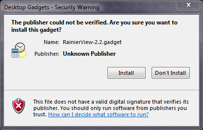

Welcome to the web page for RainierView, a free Windows 'gadget' for various Mount Rainier webcams.
Free as in 'free speech', and as in 'free lunch'. Written and distributed in tribute to my favorite climbing club, OSAT - which is not connected with or responsible for this software in any way.
You can download the Gadget file here; depending on what web browswer you're using you may be able to either "Open" it directly (using the default "Windows Desktop Gadgets" option) or click "Save File" it to your hard drive. If you save it, you will then have to go find the "RainierView-2.0.gadget" file that was downloaded, and double-click it. Either way, you will be presented with this scary notice:

I promise you there is nothing nefarious in this software - I wrote it myself - so go ahead and click "Install".
If you have installed a previous version of this gadget, you may end up with more than one in your Gadgets window (right-click your desktop, select "Gadgets"). If you click the "Show details" button, you can see which one is the latest, and then right-click and "Uninstall" the old one.
Mostly just admire and be inspired by the view of Rainier on your desktop!
If you click on the image, four icons will appear above the upper-right edge:
These are the standard gadget controls that let you (reading from the top down): 1) close the gadget; 2) toggle its size between large and small; 3) change the options for the gadget (see 'Options', below); or 4) drag the gadget around on your screen.
You can just leave this thing running on your desktop 24/7 - it doesn't use much in the way of computing resources. But if you do want to close the gadget, just click its "X" box and it will be gone. If you later want to see it again, you do not need to re-install the software - just right-click your desktop, select "Gadgets", find RainierView's icon here and double-click it, and it will be restored.
The 'Options' page doesn't do anything useful yet. You can change the update rate for the image, but the default value of "1" is the best for this camera, and making it bigger won't really affect much. In
If you'd like to see how it works, adapt it to your own use, or just check it out (a little source code control joke, there) you can go to my RainierView project on GitHub.
Copyright ©Rob Cranfill 2014; All Rights Reserved